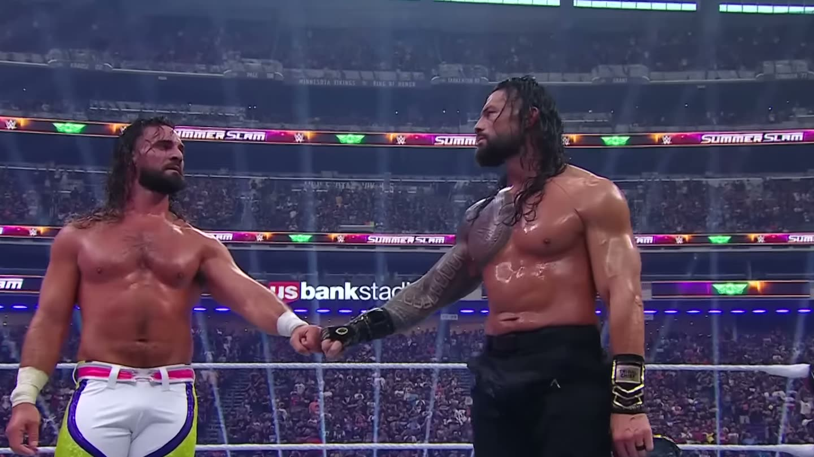

Seth Rollins è sparito: cosa sta succedendo davvero
Dopo la sconfitta contro Roman Reigns a SummerSlam, Seth Rollins è scomparso dalla TV. Infortunio, contratto, house show e quell'abbraccio con Cody Rhodes: facciamo chiarezza.
Seth Rollins è sparito. E no, non è un caso.
L'ultima volta che l'abbiamo visto in TV era a SummerSlam, contro Roman Reigns, con in palio il World Heavyweight Championship. Ha perso. E da quel momento, silenzio. Niente segmenti, niente promo, niente match in televisione.

Quando un nome di quel calibro scompare dalla programmazione, le domande arrivano da sole. Quindi mettiamo in fila quello che sappiamo davvero.
L'infortunio: leggero, ma c'è
Secondo il Wrestling Observer, Rollins ha un infortunio leggero, e la WWE gli sta dando il tempo di recuperare.
Niente di drammatico, quindi. Ma abbastanza da tenerlo lontano dalle telecamere.
Fermo sì, ma non del tutto
Ed ecco il dettaglio che in tanti si sono persi: Rollins non è fermo del tutto. Ha continuato a lottare negli house show durante il tour in Sud America.
Tradotto: il fisico regge, il ring lo vede ancora. È la TV che, per ora, non lo vede.
Il suo futuro in WWE
Se qualcuno temeva un addio, può stare tranquillo. Rollins ha detto che gli restano ancora tre anni di contratto, e che vuole restare in WWE finché può dare qualcosa.
Non è il discorso di uno che ha la valigia pronta.
Money in the Bank e Street Fighter
A Money in the Bank, a New Orleans, ci sarà, ma solo per supportare sua moglie, Becky Lynch. Niente match, niente interventi. Chi spera in un'apparizione a sorpresa, meglio non farsi illusioni.
E poi c'è la scena che ha fatto il giro dei social: alla premiere del film di Street Fighter Rollins si è pure abbracciato con Cody Rhodes. Sì, proprio lui.
Quindi: quando torna?
Questa è la vera domanda. E la risposta onesta è che la WWE non ha dato nessuna data.
La mia lettura? Se lo stanno tenendo lontano dalla TV, è per farlo tornare nel momento in cui fa più rumore. Un ritorno di Seth Rollins non si spreca in un lunedì qualsiasi: si costruisce, si aspetta, e quando arriva deve far saltare l'arena.
Un nome come Rollins non sparisce: viene messo in pausa. E le pause, in WWE, si pagano con gli interessi.
E tu?
Quando pensi che tornerà Seth Rollins? Scrivilo nei commenti sotto il video su YouTube o sui miei social.
Io sono Tony Wrestling. Ci vediamo alla prossima.
Domande frequenti
Perché Seth Rollins non si vede più in TV?
Secondo il Wrestling Observer ha un infortunio leggero e la WWE gli sta dando il tempo di recuperare. Nel frattempo ha continuato a lottare negli house show del tour in Sud America.
Seth Rollins lascia la WWE?
No. Rollins ha detto che gli restano ancora tre anni di contratto e che vuole restare in WWE finché può dare qualcosa.
Quando torna Seth Rollins?
La WWE non ha dato nessuna data. A Money in the Bank, a New Orleans, ci sarà solo per supportare sua moglie Becky Lynch, senza match.